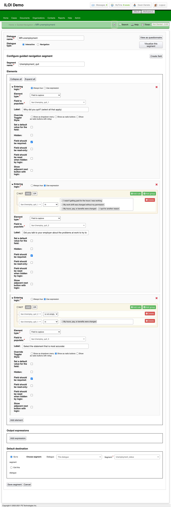
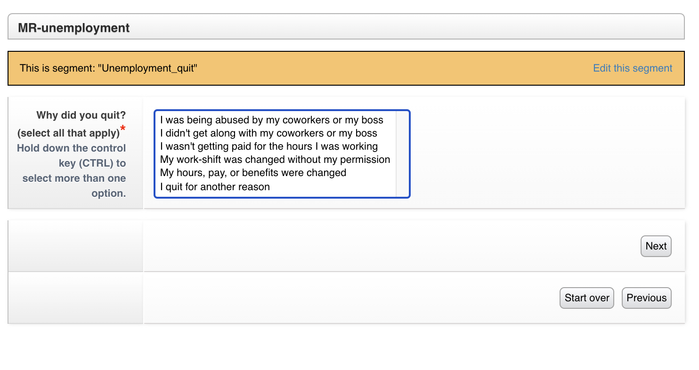

Guided Navigation Overview¶
Guided navigation is a system in LegalServer that allows for the creation of “expert system”-like forms. ILAO is piloting it as an alternative to webform triage rules in some cases.
Each dialogue is a process that contains segments. Each segment can be rendered as a form and exit to other segments or to other dialogues or just end.
Question 1 asks for the reason a user is unemployed

Selecting I quit takes the user to this screen:
Creating Dialogues & Segments¶
As a practice we:
- Dialogues to be used as starting points in OTIS are set against the top level LSC problem code.
- Dialogues to be used within Guided Navigation to surface sub-issues are not tagged to OTIS.
- Limit segments to 1 question per segment, unless that segment is setting a single field.
- Users may be moved from one dialogue to another based on answers. For example, a user may enter on Bankruptcy and get moved to Foreclosure when they are seeking a bankruptcy to save their home.
Examples¶
ILAO may create a Guided Navigation for Divorce that is called from OTIS when a user may have a divorce issue.
The divorce dialogue may call a “has domestic violence” dialogue that sets whether there is DV in the divorce before returning to ask the user additional divorce triage questions.
The has domestic violence dialogue has 1 segment containing 4 questions. The result sets a single field “hasDV” to true.
Integration into Website¶
Note
This is to document how we envision this will work. It has not been built yet.
GN processes will be tagged to Legal Issues. When the Legal issue is selected in the OTIS triage, the Guided Navigation process will takeover (existing triage rules will continue to be used where Guided Navigation is empty).
When Guided navigation is used, the system will:
- create a Guided navigation session
- pull the Guided navigation form(s)
- display them to the user, collect data
- send the data back to Guided navigation
- repeat until the end of the interview is reached
- take the collected profile and determine what organization(s) match against data stored in Drupal
Relationship to Program Intake Settings & Services¶
Need to tie back legal issues + segment variables